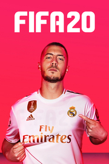

 |
|
| Tiempo de juego | No Jugado |
| Última actividad | Nunca |
| Añadido | 19/11/2025 13:02:53 |
| Modificado | 19/11/2025 20:26:03 |
| Estado de finalización | Not Played |
| Librería | Playnite |
| Fuente | 2TB DATOS |
| Plataforma | Microsoft Xbox One Nintendo Switch PC (Windows) Sony PlayStation 4 |
| Fecha de lanzamiento | 27/09/2019 |
| Puntuación de la Comunidad | |
| Puntuación de la Crítica | 69 |
| Puntuación de usuario | |
| Género | Sports |
| Desarrollador | EA Romania EA Vancouver |
| Editor | EA Sports |
| Característica | Multiplayer Single-player |
| Enlaces | Wikipedia Official website |
| Tag | [Game Engine] Frostbite 3 (PS4 [Game Engine] Xbox One and PC only) [People] composer: Nafrom [People] designer: Matthew Prior [People] producer: Aaron McHardy [People] producer: Mat Thomas [People] producer: Nicholas Wlodyka [People] producer: Sebastian Enrique |
FIFA 20 is a football simulation video game published by Electronic Arts as part of the FIFA series. It is the 27th installment in the series and was released on 27 September 2019 for Microsoft Windows, PlayStation 4, Xbox One and Nintendo Switch. This is the first game in the main series to not have Xbox 360 and PlayStation 3 versions since FIFA 06: Road to FIFA World Cup and FIFA 08 respectively.
Real Madrid winger Eden Hazard was named the new cover star of the Standard Edition, with Liverpool defender Virgil van Dijk on the cover of the Champions Edition. Former Juventus and Real Madrid midfielder Zinedine Zidane was later named as the cover star for the Ultimate Edition.
The game features VOLTA Football for the first time, a new mode that provides a variance on the traditional 11v11 gameplay and focuses on small-sided street and futsal games. The mode shares similarities to the former FIFA Street series.
The online servers for the game were shut down on 6 November 2023.
Gameplay changes to FIFA 20 focus primarily on a new feature titled VOLTA Football. The mode, which translates to 'return' in Portuguese, focuses on street football rather than the traditional matches associated with the FIFA series, similar to the FIFA Street series. It includes several options to play in three versus three, four versus four and five versus five matches, as well as with professional futsal rules. The mode will incorporate the same engine, but places emphasis on skill and independent play rather than tactical or team play.
Additionally, players have the option to create their custom player by gender, clothing, shoes, hats, accessories and tattoos. Following the completion of the three-part series "The Journey" in FIFA 19, players are now able to follow a similar storyline mode in VOLTA Football, which would be played with the player's own character. Alex Hunter also makes a cameo in the game, along with his agent Beatriz Villanova.
Changes were also made to the traditional 11 versus 11 mode to encourage more one-on-ones and off-the-ball space creation. New penalty and free-kick mechanics were implemented and updates were made to the ball physics.
VOLTA Football includes 17 locations, with each providing a unique experience. In addition to the generic warehouse and parking lot, VOLTA Football features venues based in real-life cities, namely Amsterdam, Barcelona, Berlin, Buenos Aires, Cape Town, Lagos, London, Los Angeles, Mexico City, Miami, New York City, Paris, Rio de Janeiro, Rome and Tokyo.
Commentary is once again provided by Martin Tyler and Alan Smith and alternating with Derek Rae and Lee Dixon for all competitions, with Alan McInally providing in-game score updates and Geoff Shreeves providing pitch-side injury updates.
Each player has his own overall rating, with Lionel Messi having the highest rating in the game with a 94.
Pro clubs is a game mode in FIFA 20 where players can create personalised pros and compete in a squad against other squads online. The objective is to rise up the Divisions, starting in Division 10 and climbing to compete for the Division 1 title.
Ultimate Team features 88 icon players, including 15 new names. Carlos Alberto, John Barnes, Kenny Dalglish, Didier Drogba, Michael Essien, Garrincha, Pep Guardiola, Kaká, Ronald Koeman, Andrea Pirlo, Ian Rush, Hugo Sánchez, Ian Wright, Gianluca Zambrotta and Zinedine Zidane all feature as icons for the first time.
Two new game modes – King of the Hill and Mystery Ball – are also incorporated in Ultimate Team following their previous inclusion in kick-off mode. Mystery Ball gives the attacking side boosts to passing, shooting, dribbling, speed or all attributes, adding unpredictability to every match. King of the Hill sees players fight for possession in a randomly generated zone on the pitch to boost the amount the next goal is worth. Ultimate Team also includes a new dedicated kit supporting Premier League's No Room for Racism campaign.
Career Mode, following feedback from the community, saw some major updates – mainly to the manager mode. New additions include fully interactive press conferences and player conversations, an improved player morale system which can affect the team or individual players stats, performance levels and stance with the manager. The ability to fully customise the manager's appearance and gender, a new dynamic player potential system, live news screenshots, league oriented UI and new negotiation environments.
The player, nicknamed "Revvy", successfully tries out for the street football team "J10", named for and led by legendary street footballer, Jason "Jayzinho" Quezada. J10's dream to win the World Championship in Buenos Aires are dashed when Jayzinho suffers an injury that will sideline him for several months. While Revvy and Sydney "Syd" Ko decide to stay on the team, the others players see no chance of winning without Jayzinho and quit. Jayzinho plans to forfeit a tournament in Tokyo organized by fellow legend Kotaro Tokuda. Revvy convinces Jayzhino to have Kotaro find a replacement third player to meet the tournament's three player requirement.
In Tokyo, Kotaro introduces a third player to join Revvy and Syd on the field. To J10's surprise, one of their former teammates, Peter Panna, is playing for an opposing team. After defeating his team to win the tournament, Peter apologies for leaving and is invited back into J10, after which they play an exhibition against Kotaro's team.
J10 travels to Amsterdam to train with legendary player Edward Van Gils, and find former teammate Big T as well. Big T challenges J10 to play and win five consecutive matches, which they accomplish. J10 defeats Big T's team and Revvy asks him to rejoin J10. Afterward, J10 plays against legendary street footballer Rocky Hehakaija's team.
Jayzinho sends J10 to Rio de Janeiro to recruit former member Bobbi Pillay. Bobbi had been training local youths in street football and invites J10 to play against her and her pupils, agreeing to return to J10 if they win. After winning, Vinícius Júnior and legendary street player Issy Hitman play against J10.
Thanks to J10's winning streak and Syd's social media campaigning, Revvy is invited to the prestigious Pro Street Invitational in New York City by Alex Hunter's agent, Beatriz Villanova. Additionally, J10 earn a place in the World Championships.
At the Pro Street Invitational, Revvy learns that Jayzinho was originally going to be invited, but was replaced by Revvy due to his injury. Playing alongside and against several professional footballers, Revvy wins the tournament to great fanfare, but is accused by Jayzinho of undermining his leadership and stealing his glory.
At the World Championship, Revvy discovers that Jayzinho has entered the tournament with a team composed of all the legendary street players they played against. Furthermore, Jayzinho has reclaimed the name J10 for his new team, prompting Revvy to choose a new name for their own team to play under.
As Revvy's team progresses through the tournament, Beatriz offers to represent Revvy and get them on a professional team. This development upsets Syd, as she assumes Revvy will abandon her as their other teammates had. Revvy reveals that before joining J10, they were offered contracts from several professional teams, but the offers were rescinded once Revvy fell into depression following their sister's sudden death. Revvy thanks Syd for helping them overcome their depression by reminding them of her, which Syd appreciates.
Revvy's team beats J10 to become the World Champions. Revvy invites Jayzinho to lift the trophy at the celebration, publicly crediting him for establishing J10 and mentoring them. Jayzinho reconciles with Revvy and accepts Vinícius Júnior's offer to run street tournaments across the world, while Revvy declines Beatriz's offer in favor of continue playing street football for J10 with Syd.
The game features more than 30 officially licensed leagues, over 700 clubs and over 17,000 players. For the first time in FIFA History, the Romanian Liga I and its 14 teams were added, as well as Emirati club Al Ain, who were added following extensive requests from the fans in the region.
Juventus, Boca Juniors, River Plate and Colo-Colo are not featured after they signed exclusive partnership deals with eFootball PES 2020. As a result, they are instead referred to as Piemonte Calcio (Juventus), Buenos Aires (Boca Juniors), Núñez (River Plate) and CD Viñazur (Colo-Colo). While these teams feature the players' likenesses, their official badges and kits are not licensed, and thus replaced by custom designs created by EA Sports. The three teams' stadiums, the Juventus Stadium, La Bombonera, El Monumental and Estadio Monumental, are replaced in the game by generic stadiums as well. Bayern Munich is featured in the game with their licensed players and kits, but without their home stadium Allianz Arena, which also happens to be exclusively licensed to PES 2020.
FIFA 20 retains the exclusive licenses to the UEFA Champions League, UEFA Europa League, and UEFA Super Cup, first seen in FIFA 19. The deal includes authentic broadcast packages, branding, and custom commentary. Additionally, the Copa Libertadores, Copa Sudamericana and the Recopa Sudamericana is featured in the game via an update released on 13 March 2020.
EA also signed a deal with ITV to use the Soccer Aid branding included in the 10 June 2020 update, containing FUT icons in Kick-Off.[citation needed]
There are 90 fully licensed stadiums from 15 countries in FIFA 20, as well as 29 generic stadiums. Bramall Lane has been included following Sheffield United's promotion, ensuring that all Premier League teams have their respective stadiums. Three new Spanish stadiums have also been added – Estadio El Alcoraz (home of SD Huesca), Estadio De Vallecas (home of Rayo Vallecano) and Estadio José Zorrilla (home of Real Valladolid).
As part of an extensive new licensing deal, 13 new stadiums across the Bundesliga and 2. Bundesliga were included. These include BayArena (home of Bayer 04 Leverkusen), Mercedes-Benz Arena (home of VfB Stuttgart), Red Bull Arena (home of RB Leipzig) and Volkswagen Arena (home of VfL Wolfsburg). Also added into the game is the Groupama Stadium, home of Olympique Lyonnais in Ligue 1; Red Bull Arena, home of New York Red Bulls in Major League Soccer; as well as the Atatürk Olympic Stadium, the venue originally slated to host the 2020 UEFA Champions League Final before the location was changed to Lisbon due to the COVID-19 pandemic. 2 new stadiums were added in 2020 when the Copa Libertadores was released in March. The stadium Estadio Libertadores de América of the Argentinian club Club Atlético Independiente is now available, as well as the stadium Estadio Presidente Juan Domingo Perón of the Argentinian club Racing Club de Avellaneda.
The FIFA 20 demo was released on 10 September 2019 and includes 6 playable teams which can be played on the UEFA Champions League kick-off mode – Borussia Dortmund, Liverpool, Chelsea, Paris Saint-Germain, Tottenham Hotspur and Real Madrid and a demo of the new VOLTA Football mode. The demo was available for PS4, Xbox One and PC.
FIFA 20 was the last FIFA game that distributed a free demo.
The game was released through the EA Access subscription on 24 September 2019, which also offers a free 10 hour trial.
FIFA 20 features three cover stars across all regional editions. Real Madrid winger Eden Hazard was named the new cover star of the Regular Edition, with Liverpool defender Virgil van Dijk on the cover of the Champions Edition. Former Real Madrid midfielder and manager Zinedine Zidane was later named as the cover star for the Ultimate Edition.
Whilst the Xbox One, PS4 and PC versions have all of the new features, the Nintendo Switch version was released under the label Legacy Edition, with updated kits, rosters and minor updates, but without the new VOLTA Football mode or any of the other new features. FIFA 20 was not released on Xbox 360 or PlayStation 3, making FIFA 19 the final game in the series to be released on those platforms.
FIFA 20 received "generally favourable" reviews for the PS4 and Xbox One versions of the game from critics, while the Nintendo Switch version received "generally unfavorable" reviews from critics, according to review aggregator website Metacritic.
Despite changing some of the mode's features, upon release, the game's Career Mode was criticised for being riddled with bugs including computer-controlled opposition managers picking unusually weak teams, players changing positions seemingly at random, and unexplained ratings changes. The criticism has been described as "issues that either turn its take on realism into a bit of a joke or break the game entirely", with claims that EA is attempting to cover up or downplay the game's flaws. The "#FixCareerMode" hashtag trended for several days on Twitter in the United Kingdom, with fans hoping to draw attention to the issues in the mode. On 16 October 2019, EA responded by releasing a new patch for the game which fixed various issues that were reported to be present.
In a re-review of the game by the Bleacher Report, (it originally awarded the game a 7.5/10 rating), it was described as a 'defensive borefest', going on to criticise the game as frustrating and unbalanced; citing server issues, frustrating game mechanics such as the slow communication between players and the overpowering of AI defending mechanic (a criticism shared by various players online), as well as a general lack of 'fun challenges and rewards' in the popular 'Ultimate Team' mode. Bleacher Report then gave an updated score of 6/10. This view was shared by former world No. 1 FIFA player 'Fnatic Tekzz', who said at a pro event, "Nobody enjoys playing it."
The Nintendo Switch version of the game was criticised for being released as Legacy Edition; a tagline given to versions of the game where only kits, rosters and stadiums are updated from the previous edition of the game.
Many professional players online have widely criticised FIFA 20 as one of the most frustrating editions in the history of the franchise, citing the clunky gameplay, dynamic difficulty and balancing issues. Players have also criticised the popular 'Ultimate Team' for adopting a 'pay-to-play' model, citing the steps that Electronic Arts have taken to make the game more friendly for e-sports competitions. In early October 2019, it was reported that some players' personal information was exposed to other gamers. Some players' that signed up to the Fifa 20 Global Series found a completed registration form with other people's information. The error exposed email addresses and birth dates of players. According to EA the problem affected about 1,600 people.